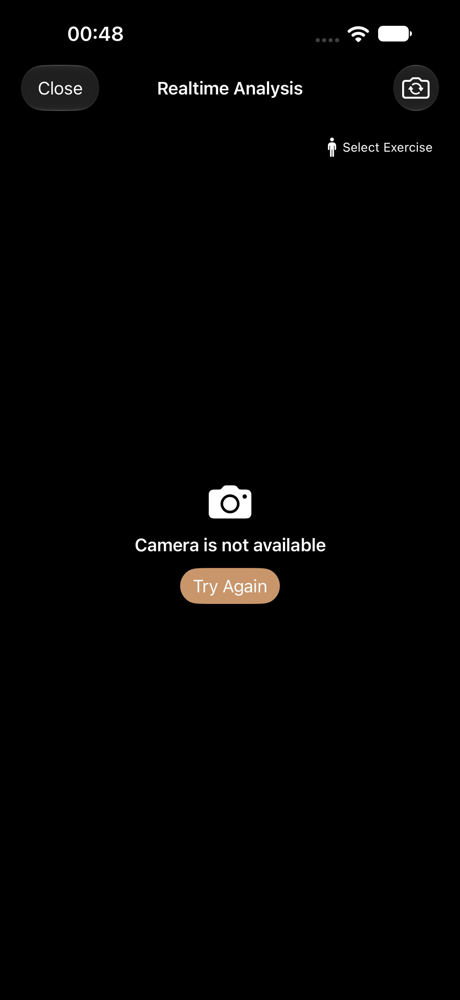
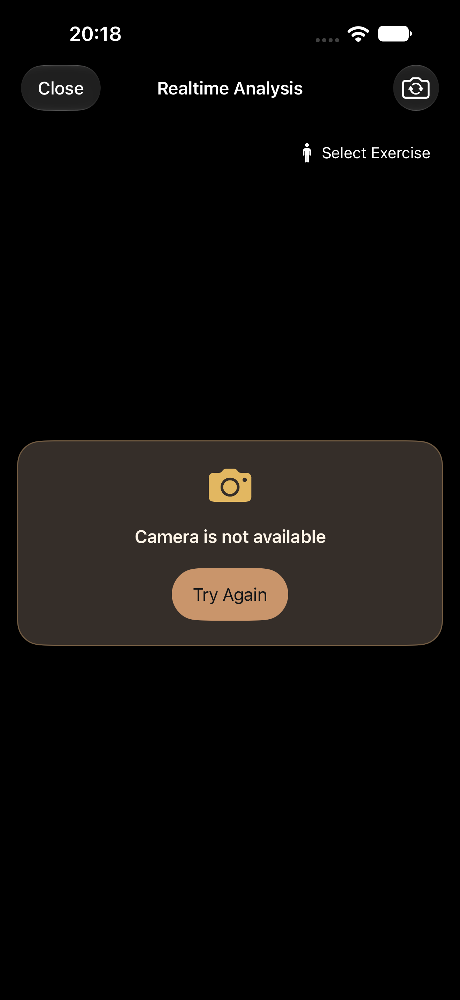
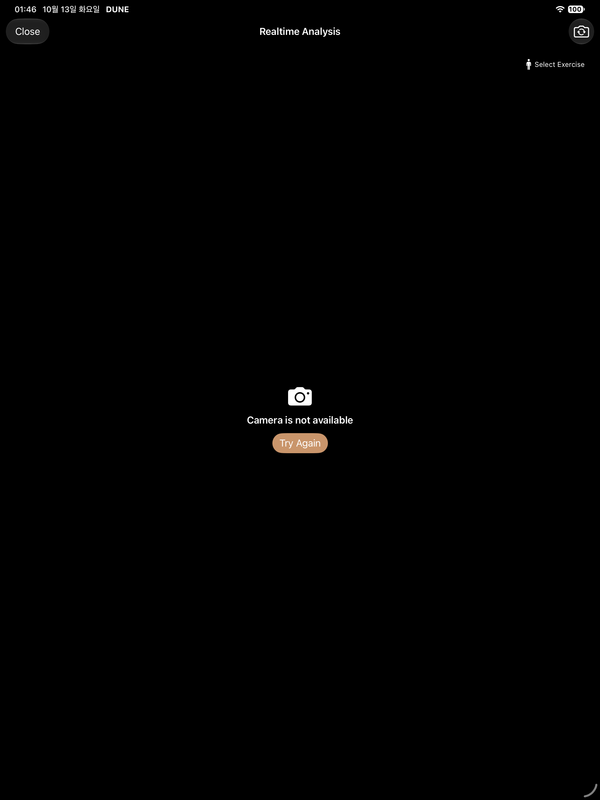
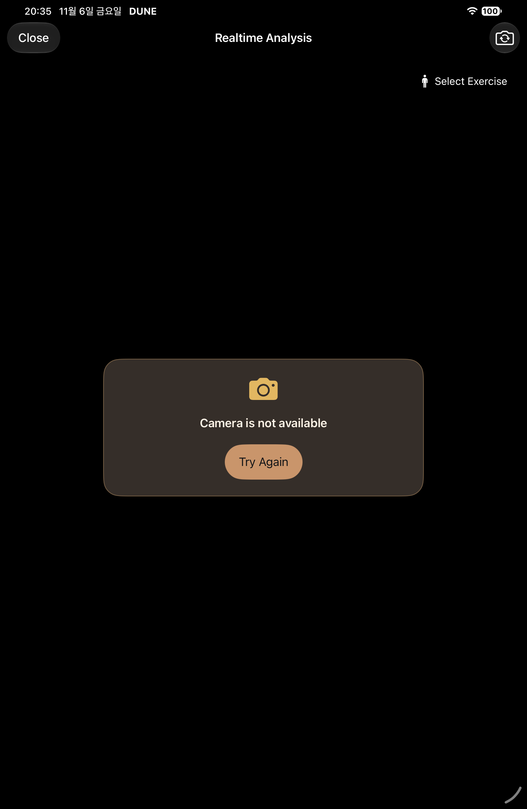
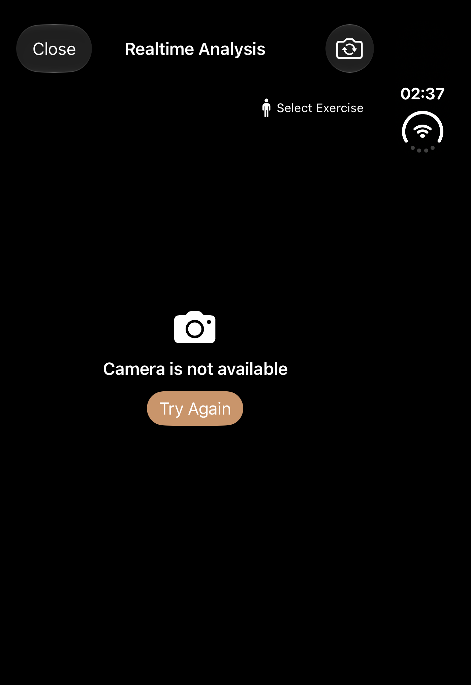
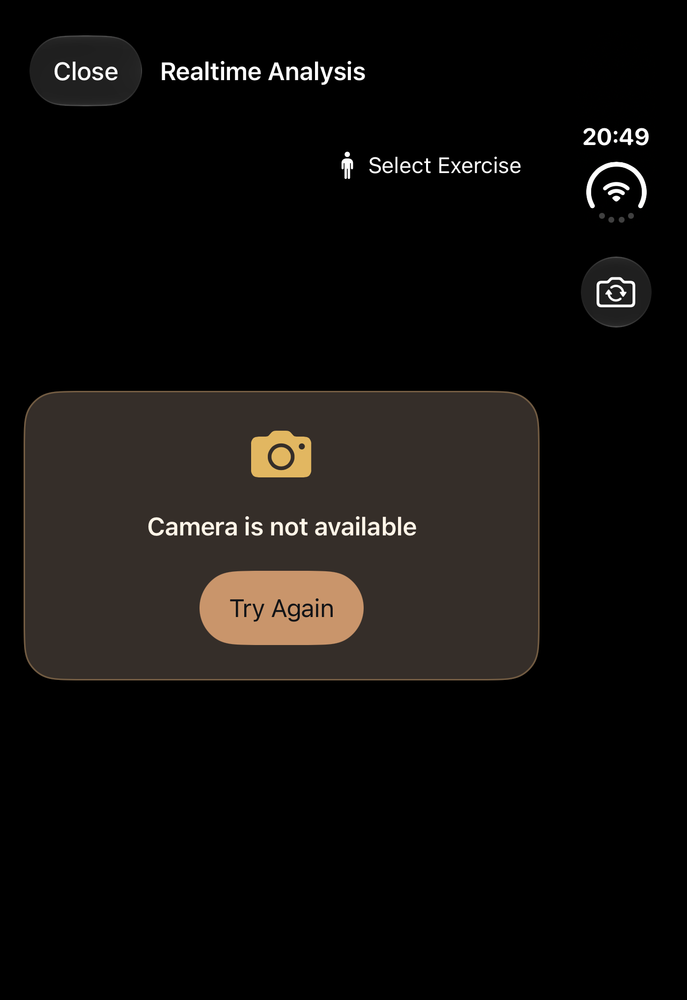
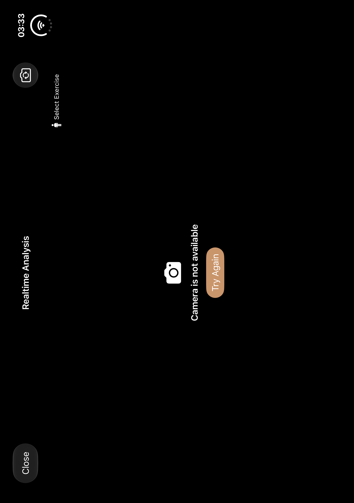
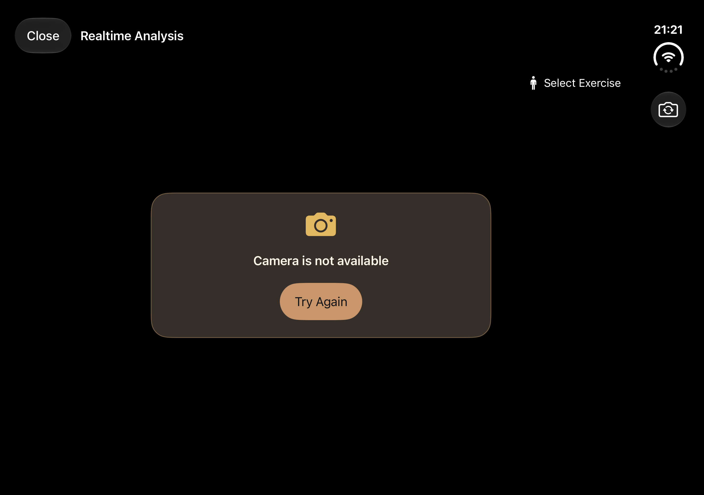

Private preparation gallery. Before and new evidence remain distinct. Synthetic fixtures are marked in README; no real camera/inference proof.
regular · before

Historical capture index source: 443a32ca4fe8b79d644b36853eaa7662e7a57606 · original entry
regular · screen-0-1320x2868-P02 camera unavailable and exercise entry_0_1F9C91F5-9B56-4F9C-8AE4-0B0854A34C5B.png

Source 23fa2883 · PostureVisualAuditTests/testP02RealtimeFallbackAndP03ExerciseSelection() · 1320×2868 px · AX hierarchy
ipad · before

Historical capture index source: 443a32ca4fe8b79d644b36853eaa7662e7a57606 · original entry
ipad · screen-0-1512x2316-P02 camera unavailable and exercise entry_0_4A693F03-9F6F-459E-A058-EA3BE7B25D89.png

Source 6fe1f089 · PostureVisualAuditTests/testP02RealtimeFallbackAndP03ExerciseSelection() · 1512×2316 px · AX hierarchy
duo · before

Historical capture index source: 443a32ca4fe8b79d644b36853eaa7662e7a57606 · original entry
duo · P02 camera unavailable and exercise entry

Source 6fe1f089 · PostureVisualAuditTests/testP02RealtimeFallbackAndP03ExerciseSelection() · 1398×2034 px · AX hierarchy
duo-open · before

Historical capture index source: 443a32ca4fe8b79d644b36853eaa7662e7a57606 · original entry
duo-open · P02 camera unavailable and exercise entry

Source d6ac · PostureVisualAuditTests/testP02RealtimeFallbackAndP03ExerciseSelection() · 2853×2007 px · AX hierarchy